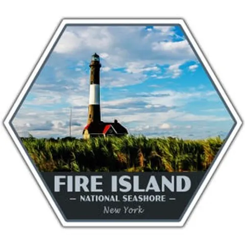
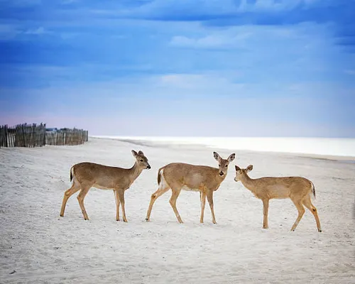

Fire Island National Park offers a breathtaking escape with its pristine beaches, rolling dunes, and rich wildlife. During my visit, I was amazed by the peaceful maritime forest, the iconic lighthouse, and the incredible sunset views over the Atlantic Ocean. It’s the perfect destination for nature lovers, hikers, and anyone seeking a tranquil coastal adventure.

Ready to experience the beauty of Fire Island for yourself? Plan your trip today and create unforgettable memories in one of New York’s most stunning national parks.
Visit the Official Fire Island National Park Website